At the heart of this article stands the question: how do the media report about protest? A regularly made allegation is that the press treat protesters unfairly and scandalise the bad behaviour of small parts of the protest group. And indeed, this is was many researchers have found as well!
Labelled the “protest paradigm”, research has uncovered a pattern of reporting that favours clashes between protesters and police, disruption of public life and appearance of protesters, crowding out reporting about protests’ messages.
In this article, I examine whether this is what happens in reporting by UK mainstream news media on domestic protest. Since the theoretical foundation of the “protest paradigm”-literature was laid decades ago, I wanted to identify the frames from the news material rather than coding a pre-defined set of frames.
Coding frame elements from the literature and the material and then combining them using factor analysis, I identify seven distinct frames. Higher factor loadings show content analysis codes which are more important in a frame.

What becomes clear is that while four of the frames resemble the delegitimising patterns in the “protest paradigm” literature closely, I also find two frames which legitimise protesters’ actions or their message.
I use the factor scores to determine the presence of one or multiple frames in 500 manually coded articles and then use the results as training data for machine learning classification of the remaining 26,613 newspaper articles about protest that I collected.
The results show that the two legitimising frames were present in a substantial part of the reporting on domestic protest of the 26-year time frame I studied, while the frames linked to the “protest paradigm” are present in the majority of articles. A linear regression shows, however, that legitimising framing becomes more common over time, while none of the other frames show a significant change in frequency.
This means that protesters still face an uphill battle when it comes to getting their messages heard through the media - but the situation is slowly improving! This might not be meaningful for individual protests and it might favour some protest issues over others, but by and large, protest is not vilified.
Overall, I think that my results show that protest can be a powerful tool for formally powerless groups to make their voices heard. Even through mainstream media. And even in the famously partisan right-wing press in the UK by the way (I show this in the Supplemental Material).
Coincidentally, the article was published just a week before the 72nd Annual ICA Conference for which I recorded a video summary of the paper